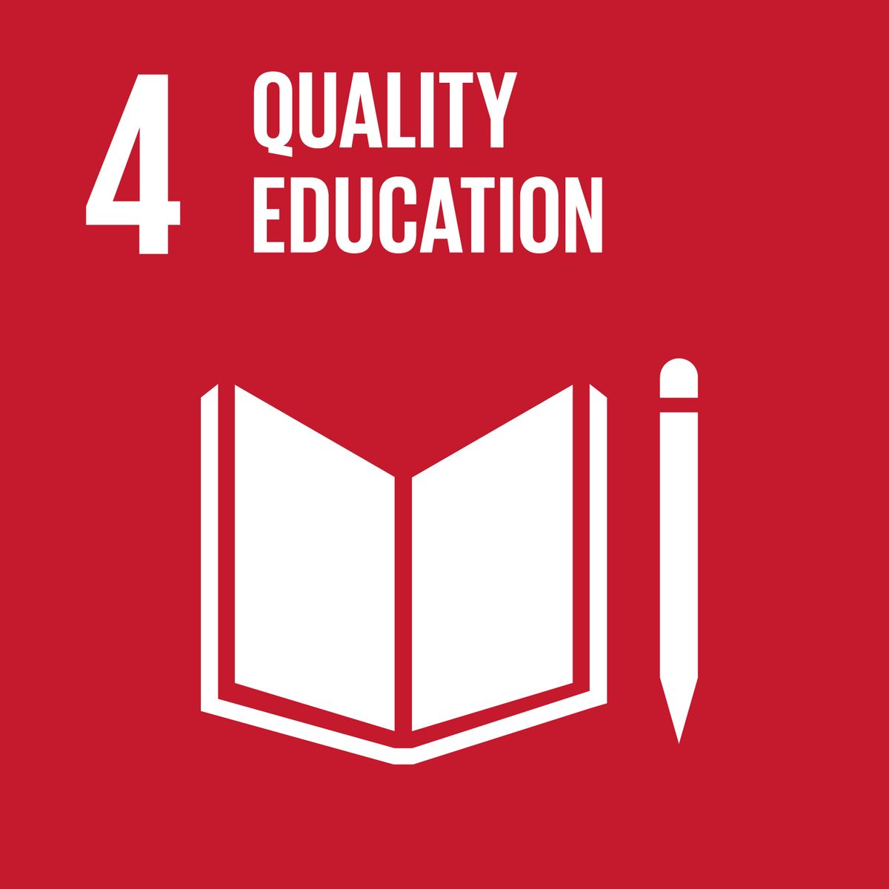
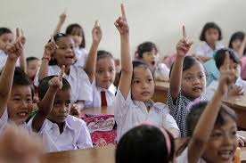

Pengertian SDG 4 — Pendidikan Berkualitas

SDG 4 (Quality Education) adalah salah satu dari 17 Tujuan Pembangunan Berkelanjutan yang menetapkan bahwa setiap orang harus memperoleh pendidikan yang inklusif, adil, dan berkualitas — dari usia dini hingga pembelajaran sepanjang hayat.
SDG 4 memastikan bahwa seluruh anak tidak hanya masuk sekolah, tetapi benar-benar belajar: membaca, berhitung, berpikir kritis, menguasai keterampilan abad 21, dan mampu berperan aktif dalam masyarakat.
Apa yang dicakup oleh SDG 4? (Ringkasan Target Utama)

- Akses setara (4.1) — Pendidikan dasar & menengah berkualitas.
- PAUD bermutu (4.2) — Semua anak mendapat pendidikan usia dini.
- Pendidikan tinggi & vokasi (4.3 & 4.4) — Skill digital & teknologi.
- Kesetaraan akses (4.5) — Tanpa diskriminasi gender, ekonomi, disabilitas.
- Fasilitas aman (4.a) — Sanitasi, listrik, internet.
- Guru profesional (4.c) — Pelatihan & kompetensi.
Kenapa SDG 4 penting?

- Pendidikan = kunci ekonomi — Tambahan 1 tahun pendidikan meningkatkan pendapatan 9–10%.
- Mengurangi kemiskinan — Membuka peluang kerja lebih baik.
- Stabilitas sosial — Literasi rendah → ketimpangan lebih tinggi.
- Kesetaraan gender — Pendidikan perempuan meningkatkan kesehatan & kesejahteraan.
- Kualitas demokrasi — Meningkatkan kemampuan berpikir kritis.
Kondisi Global & Indonesia

Dunia (UNESCO 2024)
- 250 juta anak tidak bisa membaca atau berhitung dasar.
- 244 juta anak usia sekolah tidak bersekolah.
- 70% anak kelas 2–3 SD di negara miskin belum mencapai literasi minimum.
Indonesia
- APM SD 99,11% — hampir seluruh anak masuk SD.
PISA 2022:
- Literasi: peringkat 62/81
- Matematika: 70/81
- Sains: 62/81
Inti Tujuan Akhir SDG 4

- Anak bisa membaca, menulis, berhitung minimal.
- Guru terlatih & profesional.
- Sekolah aman, bersih, modern.
- Tidak ada anak miskin/disabilitas/perempuan yang tertinggal.
- Pendidikan relevan dengan teknologi & dunia kerja.